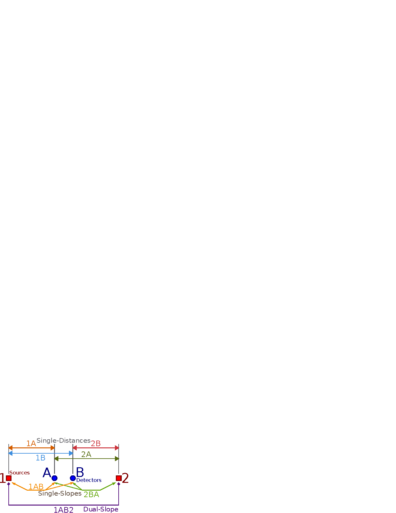
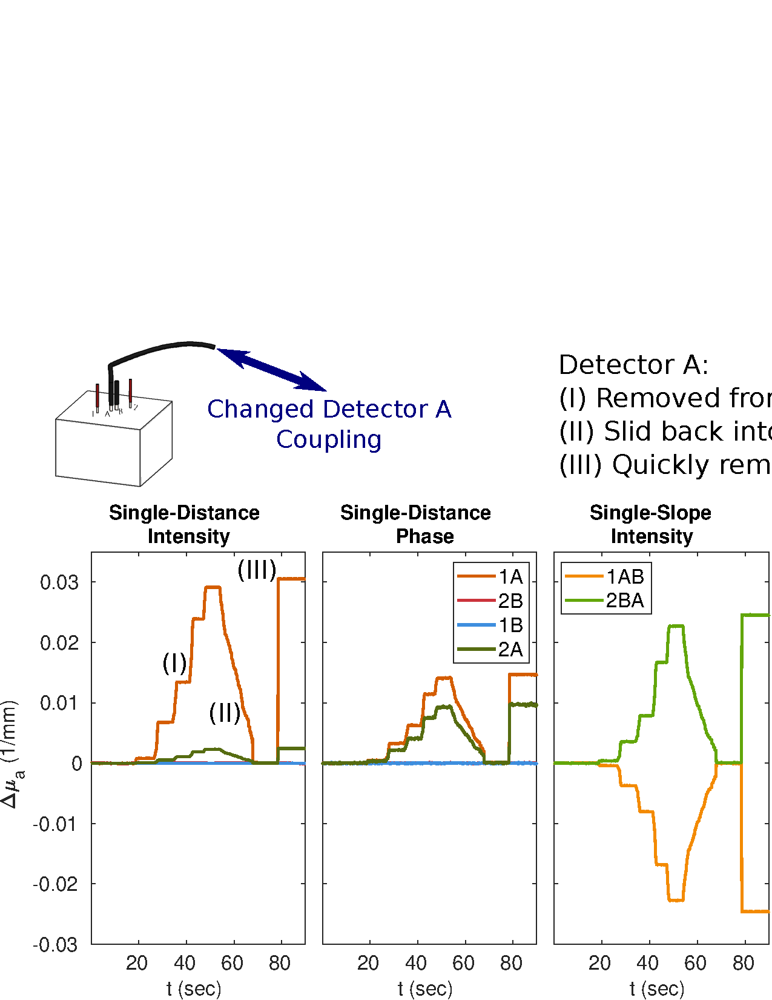
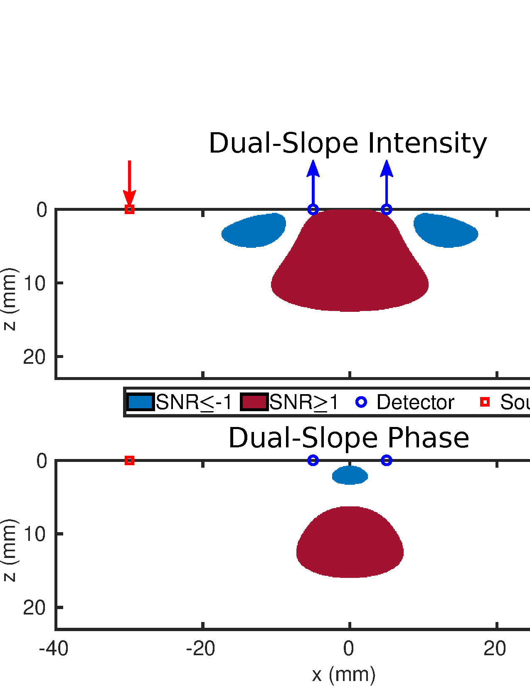
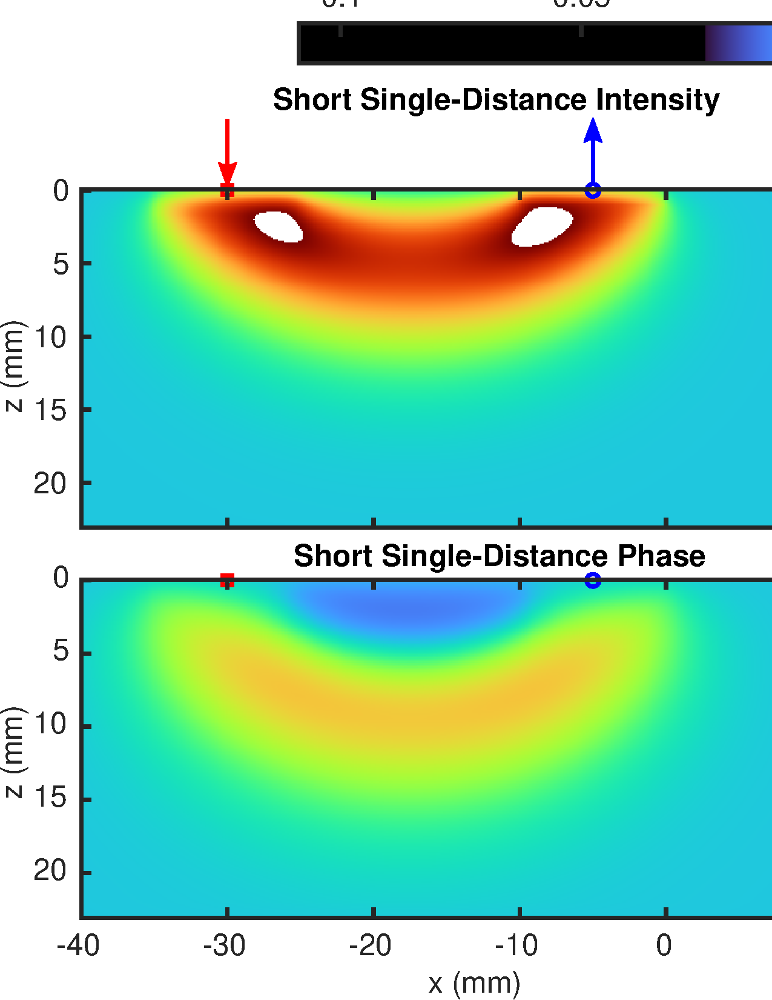
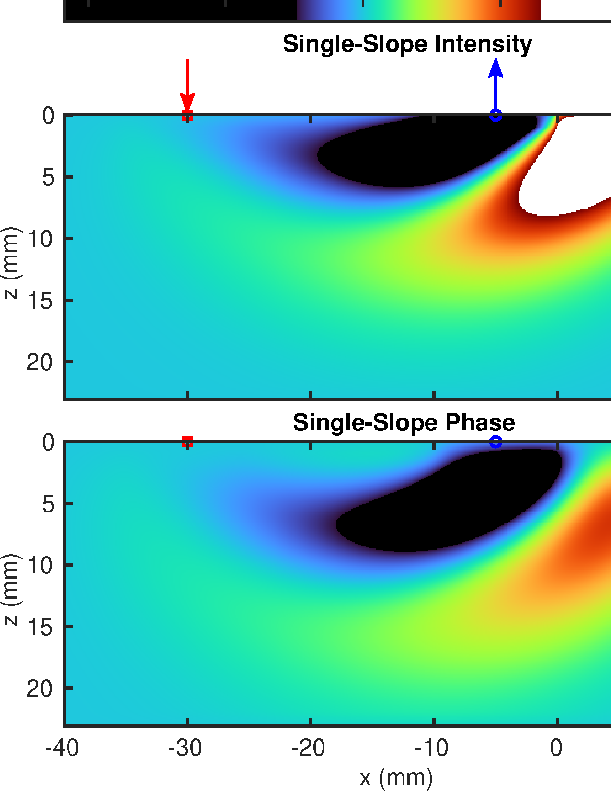
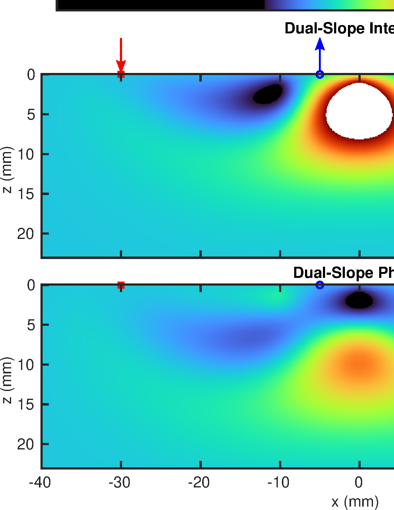
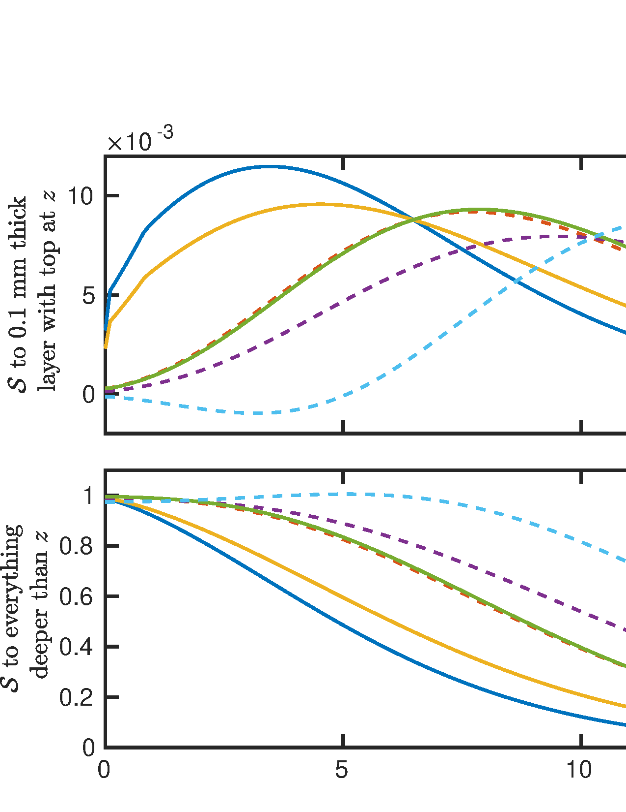

Introduction to Dual-Slope
Introduction to Dual-Slope
Overview of the Dual-Slope Method

1 and 2. Detectors shown in blue
and lettered A and B. Single-Distance (SD)
short sets are 1A and 2B, and long sets are
1B and 2A. Common source Single-Slope (SS) sets
are 1AB and 2BA (See Note 1). Finally the
DS set comprises all optodes
and is named 1AB2.Note 1: Common detector SS sets
A12 and
B21 are also present, but are redundant with the common
source sets shown.Note 2: This configuration is typically implemented with of 25 mm, & 35 mm, that is
1A and 2B are 25 mm and
1B and 2A are 35 mmTo address the issue of superficial sensitivity and seek preferentially deep sensitivity we developed the DS method for NIRS. This was inspired by our MD studies which showed promise in SS and φ data-types. We developed DS for FD, however a similar technique for TD was also developed simultaneously.
DS relies on the averaging of two measurements of the slope of some 𝒴 versus ρ. An example of a typical DS optode configuration is shown in Figure 1.1. In FD NIRS, 𝒴 may be the φ or the ln(ρ²I)1 of the detected light signal which is measured between a single source and detector. This measurement between one source and one detector is dubbed SD. Using data at multiple ρs, the slopes of φ or ln(ρ²I)2 versus ρ can be measured. These slope measurements can be achieved with either a single detector and multiple sources or multiple detectors and a single source. Both cases are referred to as SS measurements which were discussed in Chapter [ch:shortLong].3
These SS or DS measurements of the slope of ln(ρ²I) or φ versus ρ can be measured as the change of the slope from some baseline value of the slope. This is done since the goal of these measurements is not a reconstruction of absolute optical properties, but instead, measurements of Δμa from a baseline value. Conversion of these changes in slope into Δμa is done by introducing a DSF, which can be calculated using absolute optical properties or generalized optical path-lengths which come from the ⟨L̃⟩. This method is explained in detail in and Appendix [app:dmuaMeas].
A DS measurement is achieved by averaging 2 SSs4 under the following requirements:5
A DS set is made of two4 SSs named SS1 & SS2, which share sources or detectors but not both.
The difference between the ρs for both SSs must be the same, thus \(\left|\acrshort{rho}_{\text{\acrshort{SD}2}}-\acrshort{rho}_{\text{\acrshort{SD}1}}\right|_{\text{\acrshort{SS}1}}=\left|\acrshort{rho}_{\text{\acrshort{SD}2}}-\acrshort{rho}_{\text{\acrshort{SD}2}}\right|_{\text{\acrshort{SS}2}}\).3
The detector for the shorter SD measurement in SS1 must be the same detector for the longer SD measurement in SS2.5
When designing DS sets, the above requirements must be met. But, in addition to these requirements, there are also two practical constraints:6
All ρs should be between 20 mm–40 mm.7
The difference between the ρs (\(\Delta\rho\)) for the SSs should be in the range 10 mm–20 mm.8
Given these requirements and constraints many different DS sets may be designed. However, when point measurements were sought, such as in which is discussed in the next chapter, the so-called linear-symmetric set in Figure 1.1 was chosen. Typical ρs for this type of set are 25 mm, & 35 mm. More complex sets were utilized when DS was expanded into imaging in and , this will be discussed in Chapter [ch:DSimage].
Advantages of Dual-Slope
Suppression of Artifacts and Drifts

A fiber was removed and
replaced from the instrument. The set used two of 25 mm and two of
35 mm. The optical wavelength (λ) was 690 nm, for which the
phantom had a absorption coefficient (μa) of 0.017 mm and a reduced scattering coefficient (μ′s)
of 0.43 mm.Note 1: This figure can be found as Figure 3 in .
Derivation of Dual-Slope Artifact Cancellation
The DS arrangement was inspired by the SC approach which was developed for achieving calibration-free measurements of absolute optical properties in FD NIRS. SC does not require calibration because instrumental coupling factors is canceled out in analysis. The difference between DS and SC is that SC was developed to use both I and φ in FD while DS may use just one or the other. Additionally, DS focuses on Δμa while SC focuses on absolute μa and μ′s. Regardless of the differences, DS has all of the same insensitivity to coupling as SC.
The full derivation showing artifact cancellation is in the original
SC and DS
publications,
but a simplified and less general version is shown here to highlight
this advantage of DS. First, lets consider the
optode arrangement shown in Figure 1.1 and some
𝒴. 𝒴 is
measured by all the SDs, but for each SD set
the theoretical 𝒴 (\(\text{\acrshort{SD}}\acrshort{Y}_{theo}\))
is added to some 𝒜s to yield the measured 𝒴
(\(\text{\acrshort{SD}}\acrshort{Y}_{meas}\)).
There is a unique 𝒜 for each optode, therefore
we have: \[\text{\acrshort{SD}}\acrshort{Y}_{\text{\texttt{1A}},meas}=\text{\acrshort{SD}}\acrshort{Y}_{\text{\texttt{1A}},theo}+\acrshort{A}_{\text{\texttt{1}}}+\acrshort{A}_{\text{\texttt{A}}}
\label{equ:SD1Acoup}\] \[\text{\acrshort{SD}}\acrshort{Y}_{\text{\texttt{1B}},meas}=\text{\acrshort{SD}}\acrshort{Y}_{\text{\texttt{1B}},theo}+\acrshort{A}_{\text{\texttt{1}}}+\acrshort{A}_{\text{\texttt{B}}}\]
\[\text{\acrshort{SD}}\acrshort{Y}_{\text{\texttt{2A}},meas}=\text{\acrshort{SD}}\acrshort{Y}_{\text{\texttt{2A}},theo}+\acrshort{A}_{\text{\texttt{2}}}+\acrshort{A}_{\text{\texttt{A}}}\]
\[\text{\acrshort{SD}}\acrshort{Y}_{\text{\texttt{2B}},meas}=\text{\acrshort{SD}}\acrshort{Y}_{\text{\texttt{2B}},theo}+\acrshort{A}_{\text{\texttt{2}}}+\acrshort{A}_{\text{\texttt{B}}}
\label{equ:SD2Bcoup}\] where SD 𝒴 is
the 𝒴 data for the designated
SD set (exempli
gratia 1A) which is either measured (\(meas\)) or theoretical (\(theo\)). Here we note that the theoretical
is what we want, but, measured is what we have. As is the measured can
not be separated from artifacts.9
Now lets consider the SSs in Figure 1.1. SS measures the slope of 𝒴 versus ρ. Considering that SS uses the SD from Equations [equ:SD1Acoup] to [equ:SD2Bcoup] as the dependent variable, we have: \[\begin{split} \text{\text{SS}}\mathcal{Y}_{\text{\texttt{1AB}},meas}= \frac{\text{\text{SD}}\mathcal{Y}_{\text{\texttt{1B}},meas}-\text{\text{SD}}\mathcal{Y}_{\text{\texttt{1A}},meas}} {\rho_{\text{\texttt{1B}}}-\rho_{\text{\texttt{1A}}}}\\ =\big[\left(\text{\text{SD}}\mathcal{Y}_{\text{\texttt{1B}},theo}+\mathcal{A}_{\text{\texttt{1}}}+\mathcal{A}_{\text{\texttt{B}}}\right)\\ -\left(\text{\text{SD}}\mathcal{Y}_{\text{\texttt{1A}},theo}+\mathcal{A}_{\text{\texttt{1}}}+\mathcal{A}_{\text{\texttt{A}}}\right)\big]\\ \div \big[\rho_{\text{\texttt{1B}}}-\rho_{\text{\texttt{1A}}}\big]\\ =\frac{\text{\text{SD}}\mathcal{Y}_{\text{\texttt{1B}},theo}-\text{\text{SD}}\mathcal{Y}_{\text{\texttt{1A}},theo}+\mathcal{A}_{\text{\texttt{B}}}-\mathcal{A}_{\text{\texttt{A}}}} {\rho_{\text{\texttt{1B}}}-\rho_{\text{\texttt{1A}}}} \end{split}\] \[\begin{split} \text{\text{SS}}\mathcal{Y}_{\text{\texttt{2BA}},meas}= \frac{\text{\text{SD}}\mathcal{Y}_{\text{\texttt{2A}},meas}-\text{\text{SD}}\mathcal{Y}_{\text{\texttt{2B}},meas}} {\rho_{\text{\texttt{2A}}}-\rho_{\text{\texttt{2B}}}}\\ =\big[\left(\text{\text{SD}}\mathcal{Y}_{\text{\texttt{2A}},theo}+\mathcal{A}_{\text{\texttt{2}}}+\mathcal{A}_{\text{\texttt{A}}}\right)\\ -\left(\text{\text{SD}}\mathcal{Y}_{\text{\texttt{2B}},theo}+\mathcal{A}_{\text{\texttt{2}}}+\mathcal{A}_{\text{\texttt{B}}}\right)\big]\\ \div \big[\rho_{\text{\texttt{2A}}}-\rho_{\text{\texttt{2B}}}\big]\\ =\frac{\text{\text{SD}}\mathcal{Y}_{\text{\texttt{2A}},theo}-\text{\text{SD}}\mathcal{Y}_{\text{\texttt{2B}},theo}+\mathcal{A}_{\text{\texttt{A}}}-\mathcal{A}_{\text{\texttt{B}}}} {\rho_{\text{\texttt{2A}}}-\rho_{\text{\texttt{2B}}}} \end{split}\] Then realizing that the theoretical SS is the slope formed by the theoretical SDs we get: \[\text{\acrshort{SS}}\acrshort{Y}_{\text{\texttt{1AB}},meas}=\text{\acrshort{SS}}\acrshort{Y}_{\text{\texttt{1AB}},theo}+\frac{\acrshort{A}_{\text{\texttt{B}}}-\acrshort{A}_{\text{\texttt{A}}}}{\acrshort{rho}_{\text{\texttt{1B}}}-\acrshort{rho}_{\text{\texttt{1A}}}}\] \[\text{\acrshort{SS}}\acrshort{Y}_{\text{\texttt{2BA}},meas}=\text{\acrshort{SS}}\acrshort{Y}_{\text{\texttt{2BA}},theo}+\frac{\acrshort{A}_{\text{\texttt{A}}}-\acrshort{A}_{\text{\texttt{B}}}}{\acrshort{rho}_{\text{\texttt{2A}}}-\acrshort{rho}_{\text{\texttt{2B}}}}\] Notice now that the 𝒜 from the 2 sources has canceled out thus these SS measurements are only effected by arifacts from the detectors.10
Finally, we can consider the DS set in Figure 1.1 which is the average of the two SSs: \[\begin{split} \text{\text{DS}}\mathcal{Y}_{\text{\texttt{1AB2}},meas}\\ =\frac{\text{\text{SS}}\mathcal{Y}_{\text{\texttt{1AB}},meas}+\text{\text{SS}}\mathcal{Y}_{\text{\texttt{2BA}},meas}}{2}\\ =\Bigg[\left(\text{\text{SS}}\mathcal{Y}_{\text{\texttt{1AB}},theo}+\frac{\mathcal{A}_{\text{\texttt{B}}}-\mathcal{A}_{\text{\texttt{A}}}}{\rho_{\text{\texttt{1B}}}-\rho_{\text{\texttt{1A}}}}\right)\\ +\left(\text{\text{SS}}\mathcal{Y}_{\text{\texttt{2BA}},theo}+\frac{\mathcal{A}_{\text{\texttt{A}}}-\mathcal{A}_{\text{\texttt{B}}}}{\rho_{\text{\texttt{2A}}}-\rho_{\text{\texttt{2B}}}}\right)\Bigg]\div 2 \end{split}\] Now recall the DS requirement that the difference between the ρs for both SSs must be the same, so: \[\acrshort{rho}_{\text{\texttt{1B}}}-\acrshort{rho}_{\text{\texttt{1A}}}=\acrshort{rho}_{\text{\texttt{2A}}}-\acrshort{rho}_{\text{\texttt{2B}}}=\Delta\acrshort{rho}_{\text{\texttt{1AB2}}}\] therefore: \[\begin{split} \text{\text{DS}}\mathcal{Y}_{\text{\texttt{1AB2}},meas}\\ =\Bigg[\left(\text{\text{SS}}\mathcal{Y}_{\text{\texttt{1AB}},theo}+\frac{\mathcal{A}_{\text{\texttt{B}}}-\mathcal{A}_{\text{\texttt{A}}}}{\Delta\rho_{\text{\texttt{1AB2}}}}\right)\\ +\left(\text{\text{SS}}\mathcal{Y}_{\text{\texttt{2BA}},theo}+\frac{\mathcal{A}_{\text{\texttt{A}}}-\mathcal{A}_{\text{\texttt{B}}}}{\Delta\rho_{\text{\texttt{1AB2}}}}\right)\Bigg]\div 2\\ =\frac{\text{\text{SS}}\mathcal{Y}_{\text{\texttt{1AB}},theo}+\text{\text{SS}}\mathcal{Y}_{\text{\texttt{2BA}},theo}}{2} \end{split}\] and finally realizing that the theoretical DS is the average of the theoretical SSs: \[\text{\acrshort{DS}}\acrshort{Y}_{\text{\texttt{1AB2}},meas}=\text{\acrshort{DS}}\acrshort{Y}_{\text{\texttt{1AB2}},theo}\] So the measured DS is the same as the theoretical, thus DS is not effected by artifacts.11 But this is only true for additive optical artifact (𝒜), so we should discuss how valid of a type of artifact this is.
In FD DS measurements, 𝒴 is either ln(ρ²I) or φ. So lets consider what an additive effect would mean. For ln(ρ²I) this would be a multiplicative artifact on I, which is in-fact a reasonable type of artifact. Thus, artifacts that DS can cancel include:
Detector gain changes or factors.
Source power changes or factors.
Optode coupling efficiency, both changes and absolute.
However, a artifact that DS can not cancel is an additive one to I which may occur if background light changes. However, since most FD NIRS instruments only are sensitive to light at their fmod, this is likely not a concern. Background light would be a concern for CW, however. Thinking of φ artifacts, an additive artifact which DS can cancel would be a time delay which is likely the most common type of phase artifact. DS can not cancel multiplicative factors on the φ which may be caused by the instrumental clock artifacts, but these types of artifacts are less likely to occur. Therefore, was can conclude that DS is nearly insensitive to artifacts, instrumental factors or changes, coupling changes, and other drifts described by 𝒜 in typical FD NIRS experimental conditions.
Example of Dual-Slope Artifact Cancellation
To demonstrate these DS in-sensitivities to
artifacts an experiment was conducted using the DS
geometry shown in Figure 1.1 with symmetric short and long ρs of
25 mm, & 35 mm. Figure 1.2 shows the
results of this experiment with data analyzed to find Δμa
using the methods in Appendix [app:dmuaMeas]. In this case the fiber
for detector A was removed from the instrument in steps,
then slid back into place, and finally pulled out. SD
measurements that included detector A (id est
1A and 2A) were heavily effected, measuring an
increase in Δμa due to the decrease in
I
or φ. Both SS
measurements were effected but in opposite ways since
detector A either comprised the short or the long arm for
the 2 slopes. For example, considering SS set 1AB, SD set
1A comprised the short arm which experienced a decrease in
signal which increased the SS’s measurement of slope
thus, appearing as a decrease Δμa.12
Finally, for DS set 1AB2
little to no change in Δμa was observed despite the
large induced artifact. This is because DS set 1AB2 is in
fact the average of SS sets 1AB and
2BA which where effected in opposite ways by said artifact.
Therefore, we have confirmed that DS can successfully suppress
artifacts these artifacts. The same suppression would be true for source
artifacts, coupling artifacts with the tissue, and instrumental
drifts.
Preferentially Deep Sensitivity
Dual-Slope Sensitivity Profile

Note 1: Simulation parameters stated in Section [ch:shortLong:sec:senPro].
Note 2: Simulation methods are found in Appendix [app:senMaps].
Expanding on Figures [fig:MDsetSDsen]&[fig:MDsetSSsen], Figure 1.3 shows the same type of regions where the SNR is greater than or equal to 1 from the parameters in Section [ch:shortLong:sec:senPro], but now for DS. Particularly, this is the linear-symmetric DS set shown in Figure 1.1 with ρs of 25 mm, & 35 mm. These profiles (Figure 1.3) immediately show the second advantage of DS of data-types such as SD and SS. This being preferentially deep sensitivity. The methods for creating these 𝒮 profiles can be found in Appendix [app:senMaps].
It is common to refer to the profiles for SD shown in Figure [fig:MDsetSDsen] as bananas, therefore we opted to refer to the profiles for DS in Figure 1.3 as nuts. This naming scheme led to the fantastic title of of . Comparing bananas to nuts one can see that a banana has significant regions near the surface, thus has significant superficial contribution. This is not the case for nuts where most of the region is localized relatively deep. One must be careful to not say that the nut or DS 𝒮 is deeper however, since the lowest extent of the bananas are at approximately the same depth as the nut. DS really has the advantage of having preferentially deep 𝒮, or suppressing superficial.
This advantage is even more pronounced in DS φ where the nut is deeper has no part touching the surface unlike DS I. However, DS φ has the disadvantage of increased noise compared to I making the SNR lower overall. Additionally, both DS I and DS φ have regions of negative 𝒮. This is shown as the SNR being less than or equal to −1. These may make data interpretation difficult and create artifacts. This will be explored more in the following sections. However, overall, the negative 𝒮 is not a significant concern for DS13 since it is small and almost entirely cancels out with large layer shaped perturbations (Figure 1.7).
Quantitative Comparison of Sensitivity for Dual-Slope and Other Data-Types
Sensitivity Maps

1B) and a short (1A) distance in
the Dual-Slope (DS) set shown in Figure 1.1. [Top] SD Intensity (I).
[Bottom] SD phase (φ).
[Left] The short source-detector distance (ρ) of 25 mm. [Right] The long
ρ of 35 mm.Note 1: Simulation parameters stated in Section [ch:shortLong:sec:senPro].
Note 2: This figure is on the same scale as Figures 1.5&1.6.
Note 3: Simulation methods are found in Appendix [app:senMaps].

1AB) in the Dual-Slope (DS) set shown in Figure 1.1 utilizing of 25 mm, & 35 mm.
[Top] SS Intensity (I).
[Bottom] SS phase (φ).Note 1: Simulation parameters stated in Section [ch:shortLong:sec:senPro].
Note 2: This figure is on the same scale as Figures 1.4&1.6.
Note 3: Simulation methods are found in Appendix [app:senMaps].

1AB2) in Figure 1.1 utilizing
of 25 mm, & 35 mm. [Top] DS Intensity (I).
[Bottom] DS phase (φ).Note 1: Simulation parameters stated in Section [ch:shortLong:sec:senPro].
Note 2: This figure is on the same scale as Figures 1.4&1.5.
Note 3: Simulation methods are found in Appendix [app:senMaps].
The value of 𝒮 can be interpreted by Equation [equ:sen_dmua] which shows it as the ratio between the apparent measured Δμa and the actual Δμa of some localized perturbation. The methods for creating these maps are discussed in and Appendix [app:senMaps]. For detailed examination and comparison of the 𝒮 maps the actual values for 𝒮 are plotted for each of the data-types within the DS set shown in Figure 1.1 with ρs of 25 mm, & 35 mm (Figures 1.4,1.5,&1.6). For these simulations the same properties as Section [ch:shortLong:sec:senPro] were used.
Figures 1.4,1.5,&1.6 show these quantitative 𝒮 maps all on the same color-scale and approximately on the length scale. This is to allow comparison between them. The color-map is chosen so that the features for every map type are visible. Since for some maps the 𝒮 has a large difference from others, the highly negative or highly positive values are shown as solid black or white, respectively. It is worth noting that the sum of an 𝒮 map is one as long as the perturbations are simulated without overlap (Appendix [app:senMaps]). In these maps overlap is used to smooth the visualization, however, in general the same intuition about the sum being the same applies.14 The intuition being that, overall, there is more positive than negative 𝒮. Thus, if there is large negative 𝒮 in one region there will be large positive 𝒮 in another to compensate. Also, if the region of sensitivity is large it will have a lower value since it is spread out, this is compared to a small region such as is the case for short versus long ρ.
First, lets focus on the SD 𝒮 maps in Figure 1.4. In general you can see that as the region of sensitivity increases in size the actual value decreases, this is due to the aforementioned normalization of the sum of 𝒮. For this reason going from short to long ρs means overall lower values of local 𝒮. Thus, the actual shape of the region is what should really be focused on. For example, in the case of SD I the 𝒮 is the strongest right near the surface underneath the optodes. This is actually the opposite of what we want, as it means SD measurements represent superficial perturbations, preferentially. Next looking at SD φ we see that the 𝒮 is more spread, but also deeper. Therefore, SD φ may already have what we want, preferentially deep sensitivity. However, φ does have negative 𝒮 near the surface which could make data difficult to interpret.15
Next, we may focus on the SS 𝒮 maps in Figure 1.5. One may naïvely think SS is a good idea since it effectively subtracts information from a short ρ which represents superficial Δμa. However, as soon as one looks at the maps it can be seen that SS is problematic. This is because it exhibits large regions of negative 𝒮 and correspondingly large regions of positive 𝒮 to compensate. This could lead to very confusing data since one does not know if the measured perturbation was in the negative or positive region. Additionally, one can not argue that the sensitivity is preferentially deep as SS shows significant 𝒮 close to the detectors. Furthermore, such extreme values of sensitivity are not desirable since a small perturbation in a particular place may dominate the measurement when one really wants to measure a smaller amplitude but more spatially spread perturbation. A final argument against SS is that it amplifies the noise beyond what is present in SD measurements since it is effectively a type of derivative measure. Therefore, we argue that SS measurements should be avoided.
Finally, moving to DS in Figure 1.6 we immediately see the centralized nut which localizes the sensitivity below the detectors. In both DS I and φ the superficial sensitivity is mostly removed compared to what was seen in SS and even SD. For φ this is most striking since the nut really is localized deep. I, however, still exhibits some superficial sensitivity in the center. On the negative side, DS does exhibit negative 𝒮 regions. These are not as strong as those seen in SS and are rather weak particularly for DS φ. Furthermore, these regions become less of a concern when larger perturbations are considered which cancel with with neighboring positive sensitivity, which will be shown in the next section (Figure 1.7). Overall, these results reinforce the advantage of DS’s preferentially deep sensitivity.
Sensitivity Curves

Note 1: Simulation parameters except the perturbation size are stated in Section [ch:shortLong:sec:senPro].
Note 2: Simulation methods are found in Appendix [app:senMaps].
Note 3: Single-Slope (SS) is not shown here since SS and DS have the same 𝒮 to layered perturbations.17
When biological tissue is measured with NIRS the tissue generally has an overall layered structure. For example scalp, then skull, then brain in cerebral measurements. For this reason it is also helpful to examine 𝒮 curves where the perturbations considered are not localized in the lateral directions but instead layers. Figure 1.7 shows this where the upper plot is the 𝒮 to a thin layer at different depths and the lower plot is the 𝒮 to the bottom layer of the medium if the medium is split in half at a given depth.16 Since layered perturbations are considered here DS and SS are the same and these curves are labeled as DS in the figure.17
Now that layered perturbations are considered (Figure 1.7) the issue of negative 𝒮 is for the most part gone. This makes the curves rather easy to interpret. Since we desire preferentially deep sensitive a peak at larger \(z\) in the upper panel of Figure 1.7 and an overall higher curve in the lower panel of Figure 1.7 is desired. The curve that exhibits this the most strongly is DS φ and unsurprisingly the shorter SD I is the worse. Another interesting result in Figure 1.7 is that the short SD φ and the DS I are almost the same. This is impressive evidence that φ is a data-type worth pursuing since even at ρ of 25 mm it can measure about as deep as DS I.
Discussion of the Dual-Slope Method
The overall conclusion of this chapter is that DS and particularly DS φ exhibits two advantages:
Insensitivity to artifacts.
Preferentially deep sensitivity.
The former advantage is rather robust and will be true in most cases, however the later advantage of sensitivity may be more fickle. This is because all of the 𝒮 profiles (Figures [fig:MDsetSDsen],[fig:MDsetSSsen],&1.3), maps (Figures 1.4,1.5,&1.6), and curves (Figure 1.7) depend on the simulated diffuse optical medium. The one used here and stated in Section [ch:shortLong:sec:senPro] is typical for biological tissue however there is room for variation in the model of the medium. For example the medium simulated was the semi-infinite homogeneous with extrapolated boundary condition (Appendices [app:forMod]&[app:senMaps]), but a better model is likely a layered or even more heterogeneous medium. There is some indication that these maps will change in these complex scenarios but the general conclusions are expected to remain the same.
Considerations on the Noise of the Two Data Types, Intensity and Phase
The main disadvantage of φ measurements is their higher noise compared to I measurements. This can be seen in the SNR maps presented in Figures [fig:MDsetSDsen],[fig:MDsetSSsen],&1.3 whose methods are in Appendix [app:senMaps]. Works have presented φ in FD or ⟨t⟩ and variance in TD with a relatively large noise. This is also seen in our representative time traces (Figures [fig:JBPfig2],[fig:SPIE2022_4],&[fig:PHTfig2]), particularly in SS which suffers from greater noise with respect to SD and DS (Appendix [app:senMaps]). However, there is room for improvement, for example by identifying optimal fmod. In fact, a previous TD study looked at the SNR of φ as a function of fmod and showed that higher fmods (higher than the 140.625 MHz used here) may offer a better SNR for φ.
Furthermore, there are possible noise improvements that can be pursued in our Imagent FD NIRS instrument. First, the acquisition time or the duty cycle of the measurements we use in a time-multiplexed scheme may be increased. Second, due to the time multiplexing of our instrument, data from different sources are not acquired simultaneously. Therefore, the ideal cancellation of noise is not achieved as described in the SC approach. Addressing these issues by using a different multiplexing scheme or frequency encoding would be a first step to improving the SNR for φ measurements.
Possible Enhancements of the Dual Slope Method
A number of aspects of the DS method may be optimized or further developed to enhance performance in terms of SNR and depth 𝒮, and to develop imaging capabilities. For example, as mentioned above, one may identify an optimal fmod to achieve a best compromise between SNR and depth of maximal 𝒮. One may also consider potential advantages of using multiple fmods. Furthermore, we have shown that multiple (more than 2) ρs may be used in each SS measurement and this may be advantageous in some applications. Finally, the DS method may be a basis for imaging applications, for example by employing an array of sources and detectors that features a number of partially overlapping DS regions of sensitivity. In-fact this imaging application has been under development and will be discussed in the following Chapter [ch:DSimage].
The data-type linearized Intensity (ln(ρ²I)) is referred to as just Intensity (I) in most cases.↩︎
To first approximation linearized Intensity (ln(ρ²I)) and phase (φ) are linear versus source-detector distance (ρ) in the semi-infinite homogeneous medium (Appendices [app:forMod]&[app:absOptPropMeas]).↩︎
For simplicity of explanation we assume that each Single-Slope (SS) is only made of two Single-Distance (SD) measurements, however, in general one may consider SS measurements using more than two SD. Additionally, we will assume that a SS comprises only 1 source or 1 detector but this is strictly not true since the actual requirements are geometrical.↩︎
Strictly speaking a Dual-Slope (DS) may be made by averaging more than 2 , however for simplicity our discussion will assume there are two in a DS set.↩︎
The following description of requirements assumes each Single-Slope (SS) is made of 1 source and 2 detectors for simplicity.3&4↩︎
These constraints are based on Near-InfraRed Spectroscopy (NIRS) instrumental limitation and specific values correspond to the ISS Imagent V2 (Imagent).↩︎
The lower limit of source-detector distance (ρ) is to achieve preferentially deep sensitivity and the upper limit is governed by detector noise or source power.↩︎
The lower end limit on the difference in source-detector distance (ρ) is limited by measurement noise and the upper limit is due to detector dynamic range.↩︎
If the additive optical artifact (𝒜) is constant in time and Single-Distance (SD) is used for dynamic measurements against a baseline, the artifacts do cancel out when finding absorption coefficient change (Δμa) (Appendix [app:dmuaMeas]). However, it is typically not reasonable to assume that the are constant in time.↩︎
Common source , like
1ABand2BA, cancel out the source artifacts while common detector, likeA12andB21, cancel out the detector artifacts (Figure 1.1).↩︎Dual-Slope (DS) not being effected by is dependent on 𝒜 not changing while one DS measurement is made. This is not strictly true since some time multiplexing must occur. Thus, in practice DS is insensitive to which change on a time scale slower than the multiplexing period. Since this period is often on the scale of 10 ms, there is effectively complete artifact cancellation in physiological experiments.↩︎
The same reasoning is true for Single-Slope (SS) set
2BAbut with the long leg changing.↩︎Despite the negative sensitivity to absorption change (𝒮) of Dual-Slope (DS) not being a significant concern, it is a significant concern for Single-Slope (SS) where the negative region is large and can create complicated and confusing recovered data.↩︎
The amount of perturbation overlap is governed by the perturbation size (Appendix [app:senMaps]) specified in Section [ch:shortLong:sec:senPro].↩︎
A negative sensitivity to absorption change (𝒮) representing the opposite direction absorption coefficient change (Δμa) being measured from the actual, a true increase measured as a decrease for example.↩︎
The curves in the bottom panel of Figure 1.7 must approach 1 as \(z\) approaches 0. This is because when \(z\) is 0 the sensitivity to absorption change (𝒮) is to the whole medium, which is 1 (Appendix [app:senMaps]).↩︎
Dual-Slope (DS) and Single-Slope (SS) being the same in the layered case leads to some interesting interpretations of results. This being that if one measures different signals from the two SS in a DS probe there must be some lateral heterogeneity, or instrumental artifacts.↩︎